sector81 supernovae (27 total)
Each figure has three panels. The top panel shows the transient light curve, the middle panel shows the local background (estimated in an annulus), and the bottom panel shows a "background-model corrected" light curve. Details about the background model are in the README.
The vertical red line marks the time of discovery reported to TNS. Other useful metadata from TNS is in the figure title.
Note that the top and bottom panel are in magnitudes, while the middle panel is in differential flux units. The magnitudes are calibrated to the flux in the reference image used for image subtraction. Thus, flux from the host galaxy is included in these magnitudes.
3-sigma upper limits are plotted as triangles with no errorbars. A typical limiting magnitude is 19.6 in 30 minutes or 18.4 in 200 seconds (for low backgrounds).
The links allow you to download the light curve data as a text file.
More details in the README.
2024ryr
 2024rwz
2024rwz
 2024pgy
2024pgy
 2024qiu
2024qiu
 2024rjr
2024rjr
 2024qfq
2024qfq
 2024pjo
2024pjo
 2024svd
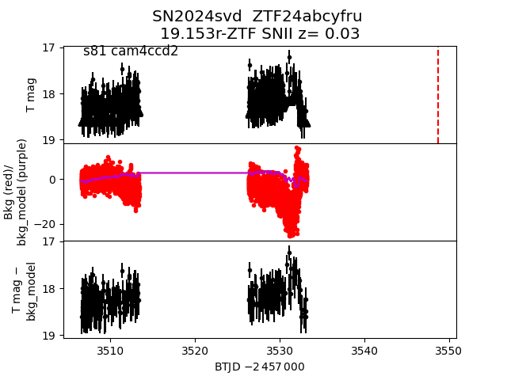
2024skc
2024svd
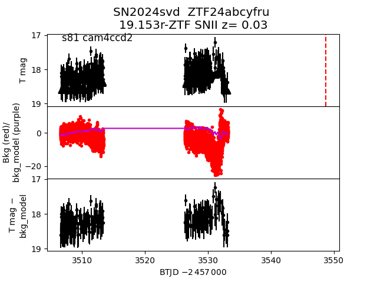
2024skc
 2024sdn
2024sdn
 2024qny
2024qny
 2024sbt
2024sbt
 2024uab
2024uab
 2024pvw
2024pvw
 2024tcz
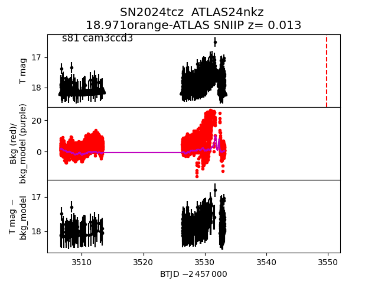
2024pmm
2024tcz
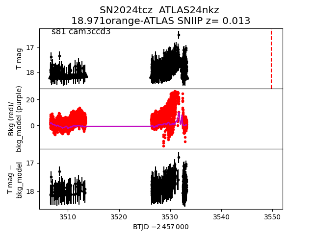
2024pmm
 2024qal
2024qal
 2024spu
2024spu
 2024qai
2024qai
 2024slh
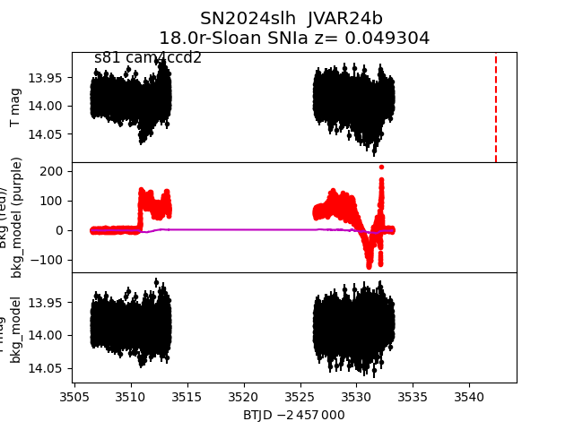
2024qyv
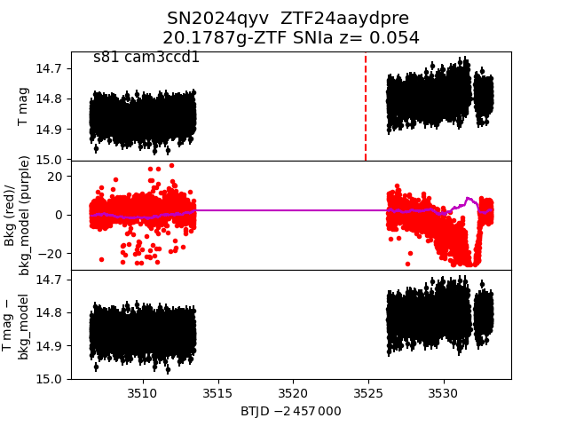
2024tyg
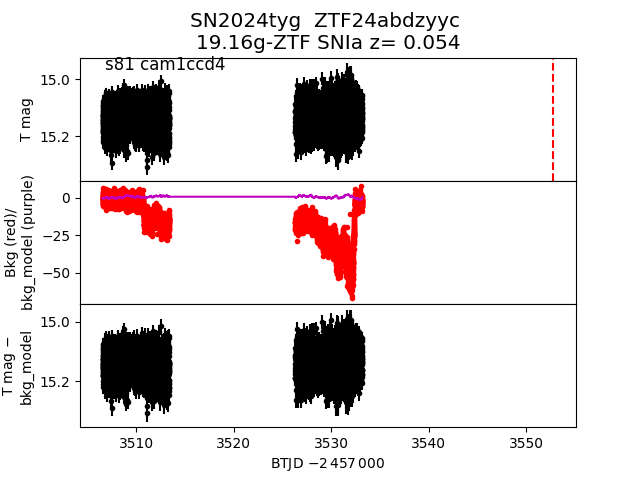
2024rnh
2024slh
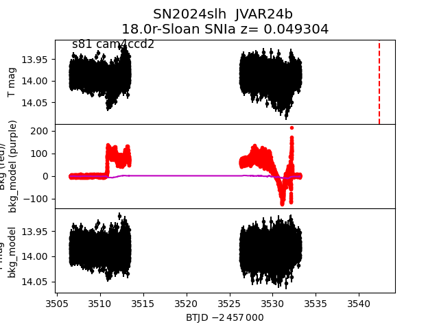
2024qyv
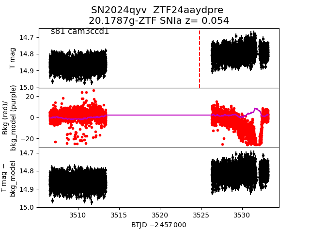
2024tyg
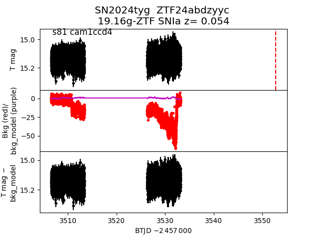
2024rnh
 2024utv
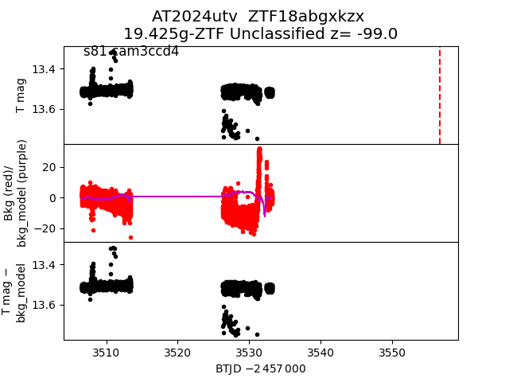
2024vbm
2024utv
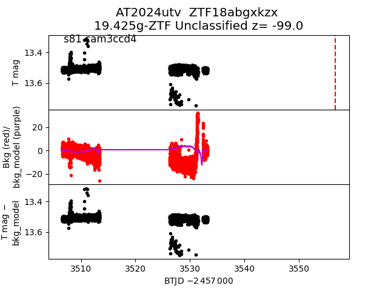
2024vbm
 2024twl
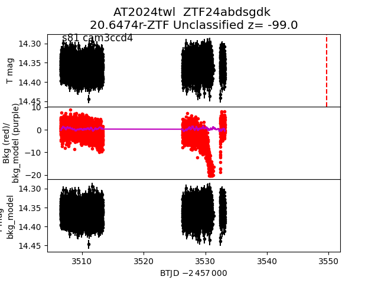
2024skg
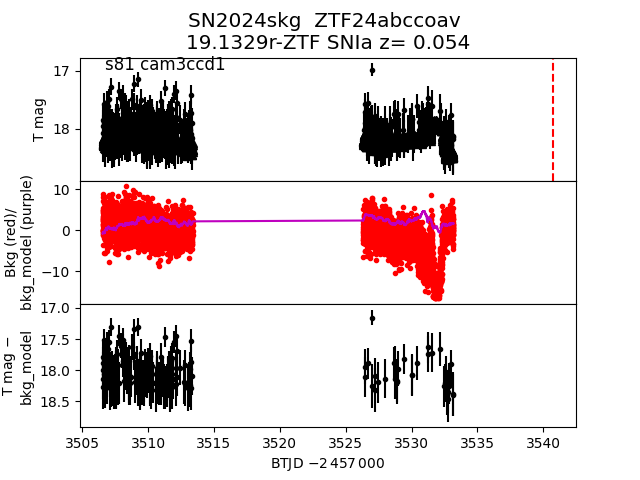
2024twl
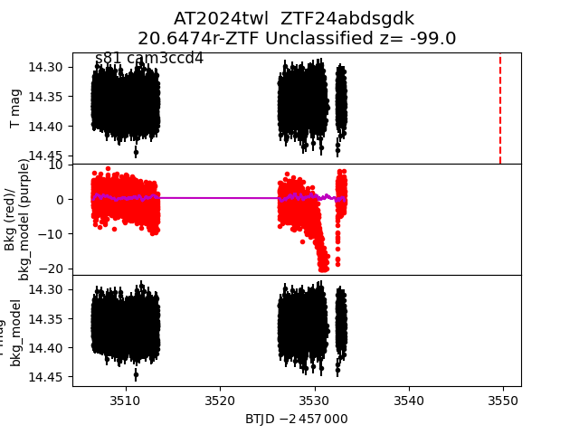
2024skg
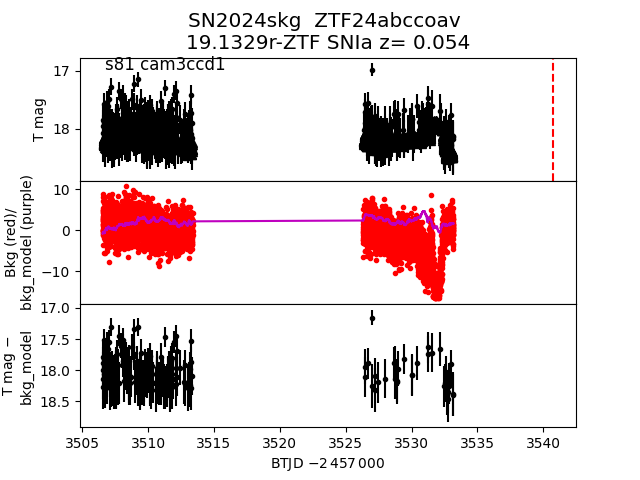